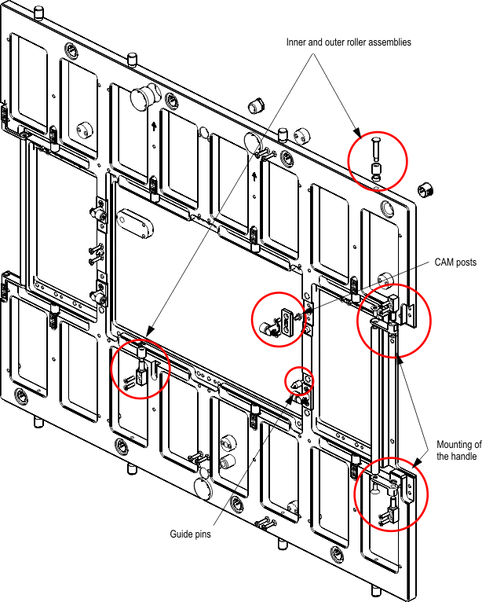

Direct-Probe stiffener details
This topic describes the detail of the design recommendation for the probe card/stiffener prober interface.
Note The drawings in this guide serve as conceptual descriptions only and may
differ from the latest original design drawings. For the original drawings see Direct-Probe probe card layout information and Direct-Probe stiffener.

Functional changes
- Introduced in SmarTest 6.5.4